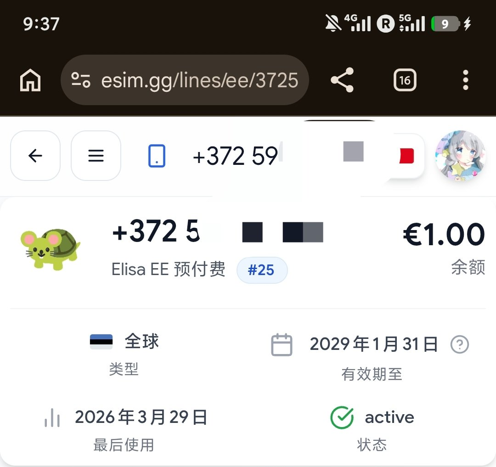
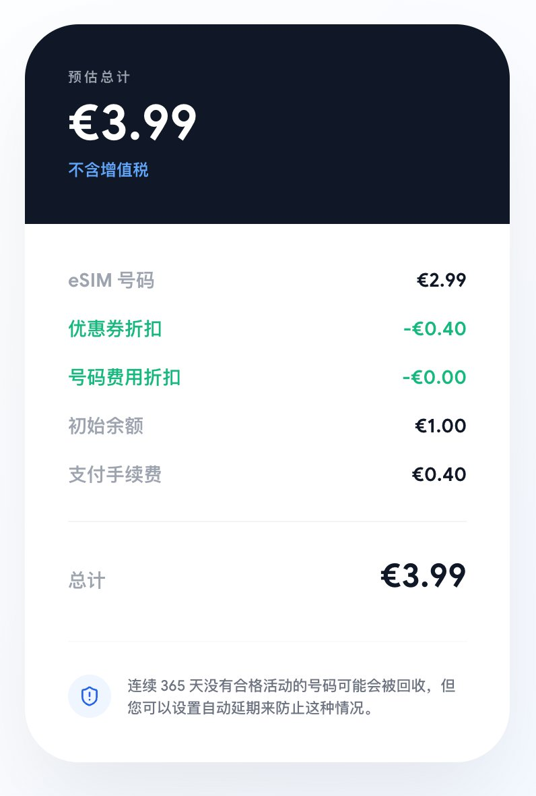
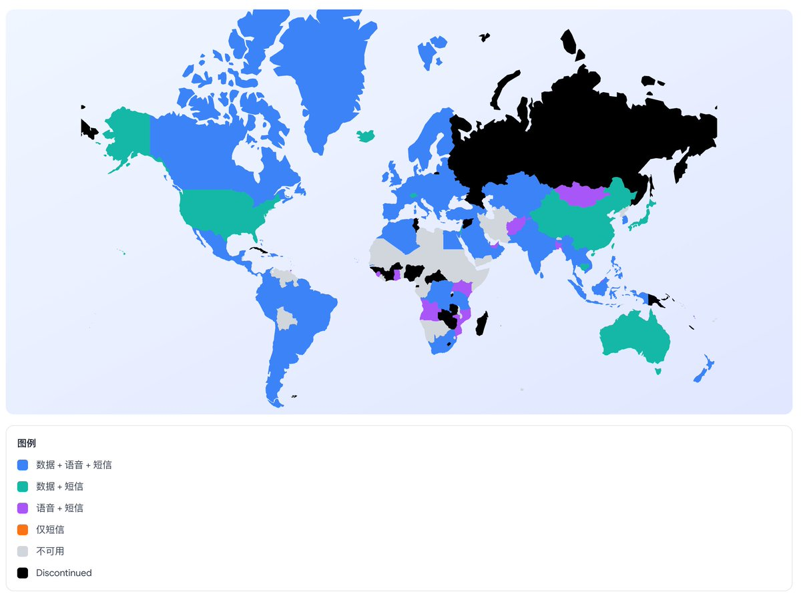

这位是乌龟电信的老板，作为🐢家第25位老用户，我来说两句
有小白卡的用户可以考虑花4o整一个，保号非常简单，无需半年动余额，只要连一下基站自动延一年
之前还有19.9o 183天50G多国流量包的折扣，特别适合在欧洲旅行时使用。新开号结算时使用「NAIXI」可省0.3o费用，购买👉🏻 https://t.co/U9D0IOj7OJ

有小白卡的用户可以考虑花4o整一个，保号非常简单，无需半年动余额，只要连一下基站自动延一年
之前还有19.9o 183天50G多国流量包的折扣，特别适合在欧洲旅行时使用。新开号结算时使用「NAIXI」可省0.3o费用，购买👉🏻 https://t.co/U9D0IOj7OJ


